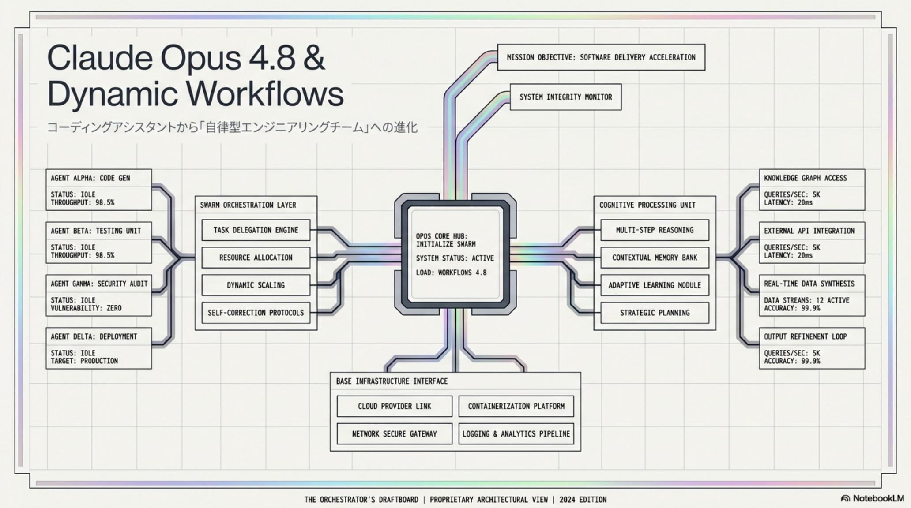
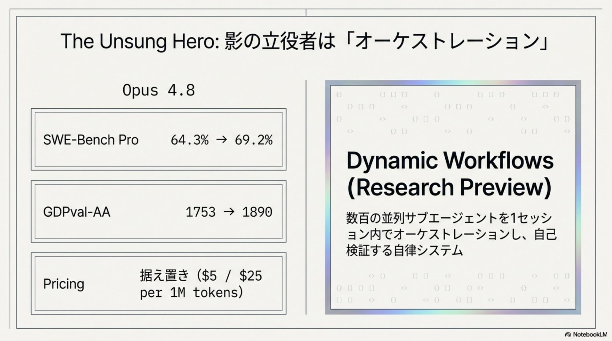
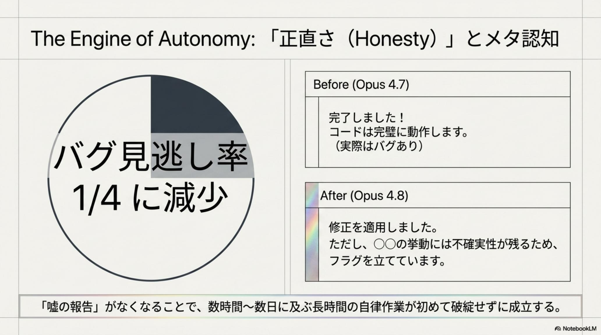
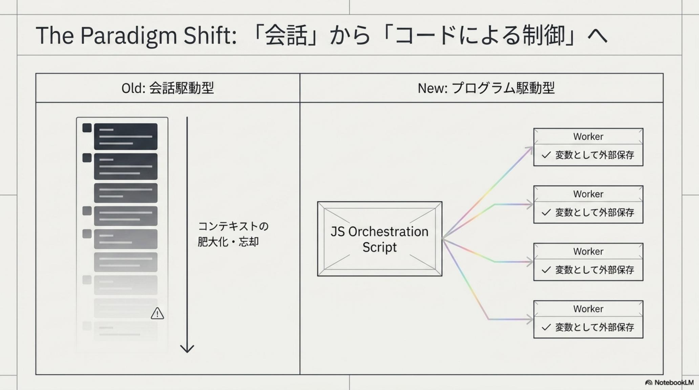
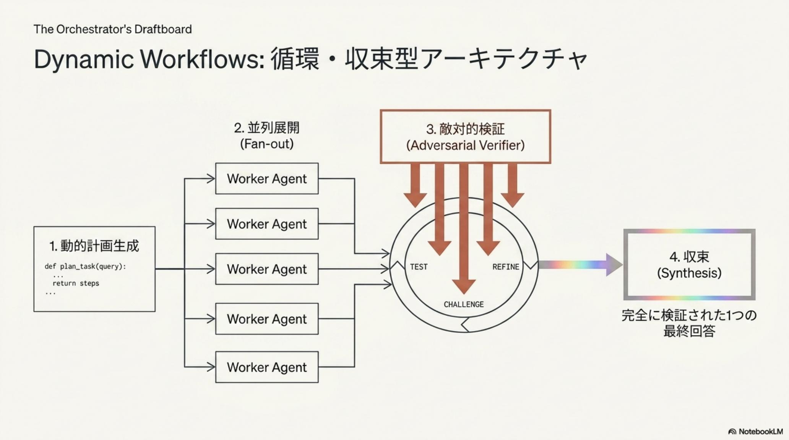
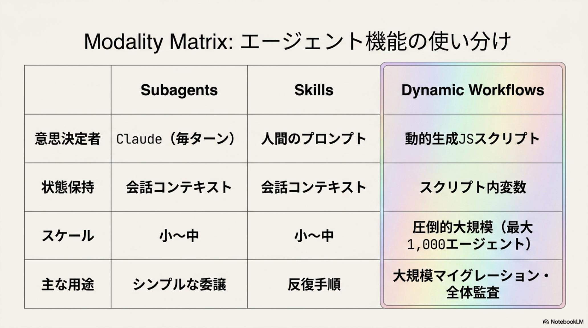
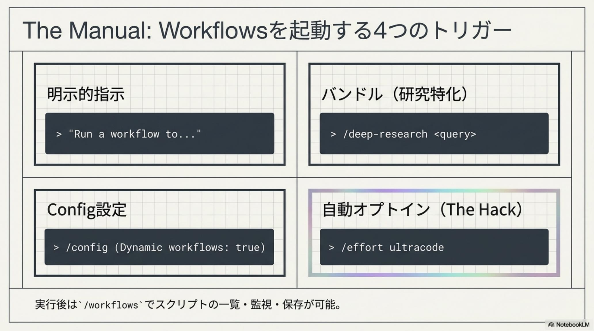
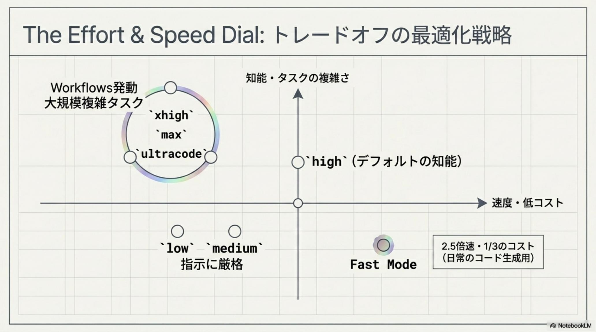
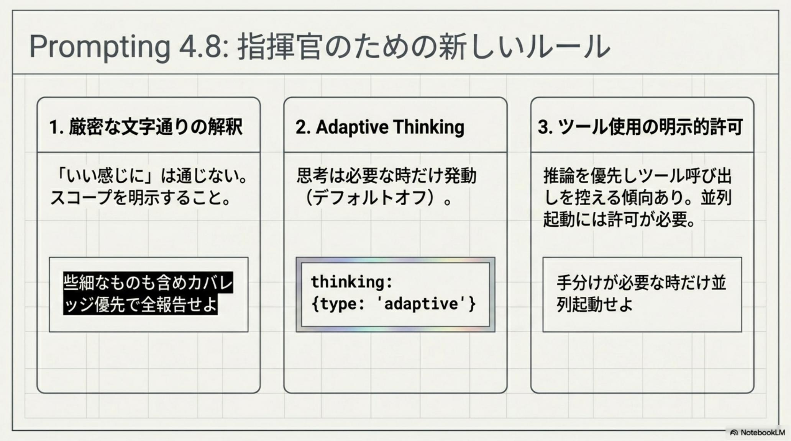

Claude Opus 4.8 ＆ Dynamic Workflows · Anthropic · Issue № 05/29
AI が、
2026 年 5 月 28 日、Anthropic はフラッグシップの最新版 Claude Opus 4.8 と、Claude Code の新機能 Dynamic Workflows（動的ワークフロー） をリリースした。前バージョン 4.7 からわずか6 週間 という異例の速さでの登場。価格据え置きながら、AI を単なる「コーディング助手」から「自律的に大規模タスクを完遂する AI 組織の指揮官」 へと進化させる質的転換だ。
Opus 4.8 は SWE-Bench Pro 69.2% （4.7: 64.3%）、GDPval-AA 1890 （GPT-5.5: 1769）を記録。最大の進化点は「正直さ（Honesty）」 で、自身のコードバグを見落とす確率が約 1/4 に減少 。Dynamic Workflows は、Claude が JavaScript オーケストレーションスクリプトを動的生成し、最大 1,000 のサブエージェント （Finder / Adversarial Verifier / Synthesizer）を並列・協調動作させる新アーキテクチャ。Bun 作者 Jarred Sumner 氏が 75 万行を 11 日で Zig → Rust 移植 （既存テスト 99.8% パス）した実例が示す通り、開発の「単位」がファイルからコードベース全体へ 拡大した。
パラダイムシフト：「コーディング助手」から「自律型 AI 組織の指揮官」へ
従来の Claude は「対話的にコードを書く助手」だった。Opus 4.8 ＋ Dynamic Workflows は、Claude 自身が JavaScript オーケストレーションスクリプトを書き、数百の専門サブエージェントを指揮する 「会話駆動型 → プログラム駆動型 」への質的転換を実現した。

FIG · Opus 4.8 = 信頼と知能の基盤 （SWE-Bench Pro 69.2% × バグ見落とし 1/4 × Fast mode で 2.5x 速度・1/3 コスト）+ Dynamic Workflows = 自律的なエージェント艦隊 （JS スクリプトで最大 1,000 サブエージェントを指揮 / Bun が 11 日で Zig → Rust 移植）。2 つが結合して初めて「自律型 AI 組織」が成立する
Chapter 1 — Opus 4.8 の主要ベンチマーク：6 週間で実務指標を大幅更新
Opus 4.8 は前バージョン 4.7 からわずか6 週間 という異例の速さでリリースされた。価格は据え置きながら、コーディング・実世界の知識労働・コンピュータ操作の3 領域すべてで大幅な向上 を達成している。
Before · Opus 4.7
64.3%
SWE-Bench Pro。GDPval-AA は 1753。十分高水準だが、自己修正能力に課題があり、長時間自律作業では手戻りが発生していた。
→
After · Opus 4.8
69.2%
SWE-Bench Pro。GDPval-AA は 1890 （GPT-5.5: 1769）。コンピュータ操作 83.4% 。価格据え置きで +5pt 級の改善 を実現。
Benchmarks · 3 領域の同時改善
SWE-Bench Pro × GDPval-AA × コンピュータ操作
Opus 4.8 は 「コーディング × 知識労働 × エージェント性能」 という実務 3 領域で同時に最高水準 を更新した。特に GDPval-AA で GPT-5.5 を +121pt 上回った点は、AI の「実世界での生産性」 という最も重要な指標で優位を確立したことを意味する。
SWE-Bench Pro 69.2% — GitHub Issue を解決する実務的コーディング能力 。Opus 4.7（64.3%）から +4.9pt 。バグ修正と機能追加の両方で改善。GDPval-AA 1890 — 専門家が評価する実世界の知識労働スコア 。Opus 4.7（1753）から +137pt 、GPT-5.5（1769）を上回る。コンピュータ操作 83.4% — 画面操作・ツール使用を含むエージェント性能 。Dynamic Workflows と組み合わせて真価を発揮。価格据え置き — 性能向上にもかかわらず料金は 4.7 と同水準 。Anthropic の競争戦略は「価格 × 性能」両軸で攻めている。

Chapter 2 — 「正直さ（Honesty）」とメタ認知：信頼性が変わる
Opus 4.8 最大の進化点は、ベンチマークスコアではなく 「正直さ（Honesty / メタ認知）」 の向上にある。「根拠のない自信」による誤報告が大幅に抑制 され、長時間自律作業における手戻りが劇的に減少 した。

FIG · 欠陥検出能力 ：自身のコードに含まれるバグを見落とす確率が約 4 分の 1 に低下 。メタ認知 ：確証が持てない場合に自らフラグを立てて報告する能力が向上。長時間の自律作業における「黙って間違える」リスクが構造的に消える
Honesty · 自己修正と不確実性表明
「黙って間違える」が、構造的に消える
従来モデルの最大の問題は、「自信ありげに間違える」 こと。短時間タスクなら人間がレビューできるが、数日にわたる自律作業 では誤った前提が雪だるま式に拡大 する。Opus 4.8 はこの根本問題に「メタ認知の獲得」という形で解を与えた。これが Dynamic Workflows の長時間実行を実用化した真の決定要因 だ。
欠陥検出 — 自身のコードのバグ見落としが従来比 1/4 。自己レビューループの精度が一段階上がった。メタ認知 — 確証が持てない場合に自らフラグを立てて報告 。人間レビュアーが「どこを集中して見るべきか」を判断しやすい。長時間作業の手戻り削減 — 数日にわたる自律実行で、誤った前提が雪だるま式に拡大するリスク が大幅に低下。Dynamic Workflows との相乗効果 — 並列サブエージェントの一つが「自分は不確実」と表明することで、Adversarial Verifier の検証対象を絞れる 。
Fast mode の導入 — Opus 4.8 通常モードは推論が深い分、出力速度が低下するトレードオフがある。これを解消する Fast mode は、出力トークン速度 2.5x ・ コスト 1/3 を実現。日常的なタスクや小規模なコード生成では Fast mode、複雑な分析や長時間作業では通常モード、と使い分けによる経済性 が運用の鍵となる。
Chapter 3 — Dynamic Workflows：JS スクリプトで AI を指揮する新時代
Dynamic Workflows は、Claude Code v2.1.154 以降に搭載された研究プレビュー機能 。AI エージェントの運用パラダイムを「会話駆動型」から「プログラム駆動型」へ 転換させる、Anthropic の中核戦略だ。

FIG · Dynamic Workflows の動作メカニズム：①動的スクリプト生成 （Claude がタスクを分析して JS オーケストレーションを動的に書く）→ ②サブエージェント展開 （最大 1,000 まで並列起動）→ ③役割分化 （Finder / Adversarial Verifier / Synthesizer）→ ④外部管理 （中間結果はスクリプト変数として保持、数日の長時間実行や中断再開が可能）
Architecture · 4 ステップで「AI 組織」が稼働する
動的スクリプト生成 × 並列サブエージェント × 外部状態管理
従来のシングルエージェント体制とは異なり、Claude 自身が JavaScript オーケストレーションスクリプトを動的に書く 点が革新的だ。スクリプトは「最適な実行順序」と「検証プロセス」を含み、役割分化したサブエージェント艦隊 を指揮する。中間結果がコンテキストウィンドウではなくスクリプト変数として外部保持 される設計が、数日にわたる長時間実行を可能にした。
動的スクリプト生成 — Claude がタスクを分析し、最適な実行順序や検証プロセスを記述した JavaScript オーケストレーションスクリプト をその場で生成。サブエージェントの展開 — スクリプトに基づき、数十から最大 1,000 のサブエージェント をバックグラウンドで起動。役割分化と協調 — Finder （情報収集）／ Adversarial Verifier （敵対的検証）／ Synthesizer （統合）の三役で品質を担保。外部管理 — 中間結果はコンテキストではなくスクリプト内変数として保持 。数日にわたる長時間実行や中断からの再開 が可能。
Chapter 4 — 実例：Bun の 75 万行 Zig → Rust 移植を 11 日間で
Bun（JavaScript ランタイム）の作者 Jarred Sumner 氏 による実証実験は、Dynamic Workflows の威力を象徴する事例。約 75 万行のコードベース全体 を、人間が逐一指示することなく、AI が自律的に Zig から Rust へ移植した。
従来手法 · 人手中心
数ヶ月〜年単位
75 万行規模の言語移植は、通常チームで数ヶ月〜年単位を要する。ライフタイム管理・ビルド設定・テスト互換性まで、人手で逐次対応が必要。
→
Dynamic Workflows
11 日間 / 99.8%
初コミットからマージまで11 日間 。既存テストスイートの 99.8% をパス 。ライフタイム管理・ファイル並列移植・ビルド/テスト修正ループまでをワークフローが完結。
Bun Case · 開発の「単位」が拡大した瞬間
ファイルからコードベース全体へ
この事例の本質は「速さ」ではなく「単位」の変化 にある。これまで AI が扱える単位は「ファイル」「関数」だったが、Dynamic Workflows はコードベース全体を 1 つのタスク として扱えるようになった。これは AI 開発における「産業革命」 に匹敵する質的転換だ。
期間 — 初コミットからマージまで11 日間 。従来の数ヶ月〜年単位から劇的に短縮。品質 — 既存テストスイートの 99.8% をパス 。「速いが壊れる」ではなく「速くて正確」を実証。自律性 — ライフタイム管理、ファイル単位の並列移植、ビルド・テストの修正ループ までをワークフローが完結。含意 — レガシーコード移植・大規模リファクタリング・言語移行という「巨大プロジェクトの経済性」が根本的に変わる 。

Chapter 5 — 実務における導入と操作方法
Dynamic Workflows と Opus 4.8 の機能を最大限に引き出すには、3 つの起動アプローチ と専用管理コマンド を使い分ける必要がある。実務での運用パターンを整理しよう。
明示的指示
プロンプトに 「workflow」という単語を含める 。例：「src/routes の全エンドポイントを監査するワークフローを実行して」 。最も直接的なトリガー。
/effort ultracode モード
この設定をオンにすると、Claude が複雑なタスクと判断した際に自律的に Dynamic Workflows を起動 。判断を AI に委ねる委任型。
/deep-research コマンド
調査・検証・引用付きレポート生成の自動化 。リサーチ用途に特化したビルトインワークフロー。
/workflows 管理コマンド
実行中のワークフローの監視・一時停止・再開・停止 。トークン消費量や稼働エージェント数 を確認可能。
スクリプトの保存と再利用
実行後、進捗ビューで 「s」キー を押すと、オーケストレーションスクリプトを保存できる。同じパターンを将来のプロジェクトで再利用 でき、組織内で「ワークフローのライブラリ化」が可能になる。これが Dynamic Workflows の累積的な生産性向上 の源泉だ。

FIG · 3 つの起動アプローチ（明示指示 / ultracode / deep-research）× 管理コマンド（/workflows）× スクリプト保存（「s」キー）。明示的にトリガーするか AI に委任するかを使い分ける運用 が、コスト・速度・品質のバランスを決める
Chapter 6 — プロンプトエンジニアリングのベストプラクティス
Opus 4.8 は「指示に文字通り従う」 特性が強化されている。これは強力な反面、プロンプトの設計に微調整が必要 であることを意味する。曖昧な指示は曖昧な結果に直結する。
Effort · 推論努力の使い分け
xhigh / high / medium / low の判断基準
推論努力（Effort）の設定は、「コストと品質のトレードオフ」 を握る最重要パラメータ。タスクの性質に応じて厳格な使い分け が求められる。コーディングエージェントには xhigh 、簡単な定型処理には low を選ぶことで、月額コストを桁違いに最適化 できる。
xhigh — コーディングエージェントや高度な分析 に推奨。Dynamic Workflows と組み合わせる場合の標準設定。high — 知能を要するタスクの最低ライン 。実用品質を保つ下限。medium / low — コスト・レイテンシ重視 。厳密に指示されたことだけを実行させたい場合に適す。Fast mode と組み合わせて経済性を最大化。
Specificity · 指示の具体化
スコープ × ツール使用 × デザイン指定の 3 原則
Opus 4.8 の「文字通り実行する」傾向は、曖昧な指示を曖昧なまま受け取る 。「いい感じに」「適当に」は禁物。範囲と制約を明示的に記述 することで、AI の力を 100% 引き出せる。デザイン指示も明確化が必要——デフォルトではクリーム色背景やセリフ書体を好む美学 があるためだ。
スコープの明示 — 「すべてを確認して」「余計な補完をしないで」 など、範囲と制約を明確に記述。ツール使用の誘導 — Opus 4.8 は推論優先でツール使用を控える傾向。「ツールを使うべきタイミング」を明文化 。デザイン指示 — デフォルト美学が出るため、企業向け UI などは具体的な配色・フォント指定が必須 。
Chapter 7 — リスクと注意点：強力な機能には相応のコスト
Dynamic Workflows は革新的だが、並列サブエージェントが反復動作するため、短時間で非常に多くのトークンを消費 する。大規模タスクでは数百ドル規模のコストが発生する可能性があり、研究プレビュー段階という安定性リスク も併存する。

FIG · 3 つの主要リスク：①トークン消費 （並列エージェントの反復動作で数百ドル規模になり得る）／ ②速度の低下 （通常モードは推論が深い分、低速 — Fast mode や /effort high で調整）／ ③研究プレビューの安定性 （挙動変更の可能性あり）。「強力さ」と「予測可能性」のトレードオフ を運用者が握る
Risks · 運用判断が問われる 3 領域
トークン × 速度 × 研究プレビュー
Dynamic Workflows の真の運用コストは、「並列度 × 反復回数 × 時間」 の三次関数的に膨らむ。Bun の 11 日 75 万行の事例も、相応のトークン投資 があってこその成果だ。導入時は「小規模 PoC → 中規模実証 → 本格運用」 と段階的に進め、コスト挙動を実測しながらスケールさせるのが鉄則だ。
トークン消費 — 並列エージェントが反復動作するため、短時間で数百ドル規模のコスト が発生する可能性。事前に上限設定を。速度の低下 — 通常モードは推論が深い分、出力が低速。日常作業は Fast mode や /effort high への調整が推奨。研究プレビューの安定性 — Dynamic Workflows は現在研究プレビュー段階 。挙動が変更される可能性があり、本番依存は慎重に。導入アプローチ — 小規模 PoC → 中規模実証 → 本格運用 と段階的にスケール。コスト挙動を実測しながら判断。
Chapter 8 — 周辺技術の動向（2026 年 5 月時点）
Claude のアップデートに並行し、AI 開発を支える周辺エコシステム でも重要なリリースが続いている。Perplexity / Vercel / Mistral / OpenAI がそれぞれ補完的な技術を投入し、エージェント時代のインフラが急速に整いつつある。
Perplexity Unigram
高速・低 CPU トークナイザー 。CPU 負荷の低減とレスポンスの高速化 を実現。エッジ推論や大量並列処理に効く基礎技術。
Vercel Persistent Sandboxes
永続的サンドボックス環境 。開発環境の状態を保存・再利用 でき、エージェント開発の容易化に直結。Dynamic Workflows の長時間実行と相性が良い。
Mistral Vibe
リモート非同期コーディングエージェント 。長時間の自律実行とオフライン継続 を支える。Anthropic の Dynamic Workflows と競合領域に。
OpenAI Private MCP
HTTPS 経由のプライベートツール連携 。エンタープライズ向けのセキュアなツール呼び出し 。エージェント × 企業システム連携の標準を狙う。

FIG · 2026 年 5 月の AI 開発エコシステム ：トークナイザー（Perplexity）× 永続実行環境（Vercel）× 非同期エージェント（Mistral）× セキュアツール連携（OpenAI）。各社が「自律エージェント時代」の異なるレイヤーを補完的に整備 している
押さえるべき数値とキーワード
69.2% SWE-Bench Pro（Opus 4.7: 64.3%）
1890 GDPval-AA（GPT-5.5: 1769）
83.4% コンピュータ操作スコア
1/4 に減少 自身のコードバグの見落とし率
2.5x / 1/3 Fast mode の速度向上 / コスト削減
最大 1,000 並列サブエージェント数
75 万行 / 11 日 Bun の Zig → Rust 移植（テスト 99.8% パス）
6 週間 4.7 → 4.8 リリース間隔
3 つのペルソナが、それぞれにやるべきこと
立場ごとに最初の一歩は変わる。「Opus 4.8 単体での導入」と「Dynamic Workflows までフル活用」 を段階的に進めるのが鉄則だ。
個人開発者 / インディーハッカー
まず Fast mode + /effort medium で日常的な開発に Opus 4.8 を導入。コスト挙動を実測 した上で、特定の大型タスク（リファクタリング、テスト生成、ドキュメント整備）で Dynamic Workflows を 小規模 PoC として試す。トークン上限を必ず設定 。
企業開発チーム / テックリード
/effort xhigh + Dynamic Workflows でレガシーコード移植・大規模監査・テストカバレッジ拡大などの「単発で大きい」プロジェクト から着手。スクリプト保存機能（「s」キー） で組織内ワークフローライブラリを構築し、累積的な生産性向上を狙う。
CTO / プラットフォームエンジニア
Vercel Persistent Sandboxes と組み合わせて長時間実行基盤 を整備。OpenAI Private MCP との連携でエンタープライズツールへのセキュアアクセス を確立。研究プレビュー段階のリスク を踏まえ、本番依存は段階的に。プロンプトの具体化ガイドライン を組織標準として配布。
Claude Opus 4.8 ＋ Dynamic Workflows は、AI を「コーディング助手」から「自律的に大規模タスクを完遂する AI 組織の指揮官」 へと進化させる質的転換である。
— Anthropic · Claude Opus 4.8 ＆ Dynamic Workflows · 2026-05-29

FIG · 「正直さ × 動的指揮 × 外部状態管理」 の三位一体が、AI 開発の「単位」をファイルからコードベース全体へ拡大した。Bun の 75 万行 11 日移植はその象徴的な第一歩 に過ぎない
本日の主要ヘッドライン（05/29）
Claude Opus 4.8 以外の 2026-05-29 主要トピックを併せてピックアップ。